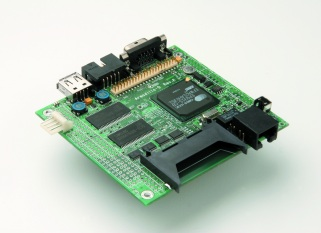

...making Linux just a little more fun!
C.O. Vimmerstedt [COV at ameritech.net]
I'm trying to change the CMOS battery in the above old notebook that I use with my ham radio station (old is good around a lot of RF). Does anyone know the secret to getting this thing apart? It seems to be held somehow in the middle under the lower keyboard.
Chuck
Smit Jadhav [smitjadhav19 at gmail.com]
i m student in computer science . i m doing a project in linux about security systems my concept is when a user tries to open a proteected file or folder he must be redirected to a other file or folder specified by us their is some sort of linking have to be done but how i dont know pls send any help message on my email id smit_jadhav19@yahoo.comor smitjadhav19@gmail.com
[ Thread continues here (2 messages/1.82kB) ]
Christopher Cole [freedomfixer at hotmail.com]
Hi there,
I'm looking for info on how to fix my login after performing dist-upgrade. I'm running Deb. Etch. I can sign on a root via term.
However I get errors like...
Could not open Network Socket, make sure dcopserver is running. And this one....
Could not start kstartupconfig. check your installation. When signing onto my user account.
I opened Kuser and crated a new login and that works. But I'd like to fix my old one.
Thanks, Christopher Cole
[ Thread continues here (3 messages/2.81kB) ]
Minh Nguyen [nguyenminh2 at gmail.com]
So far, issues of LG have been compressed using tar and gzip. Is there any intention to use tar with bzip2 for future issues? Since most of the files in each issue are text files, bzip2 is more efficient (in terms of the size of the compressed file) than gzip. Here is a comparison of bzip2 and gzip using the current issue; i.e. November 2007 (#144):
1028042 lg-144.tar.bz2 1045337 lg-144.tar.gzIMHO, providing a bzip2 compressed format of LG issues would save some download time.
Regards
Minh Van Nguyen
[ Thread continues here (7 messages/8.41kB) ]
Derry [fajd at tpg.com.au]
I have SUSE 10 on my PC and installed Ubuntu which has partitioned my hard drive. I want to reformat the hard drive to allow a clean reinstall of Ubuntu 7.10 only from a desktop CD. I've tried using "fdisk" but get the error message "Unable to open /dev/hda" which suggests a problem somewhere, yet Ubuntu currently runs with out any problems. Do I continue with fdisk? If so, how? Or try something else? Once reformatting is successful, will the PC boot directly off the CD or do I need to make a boot disk of some kind? Many thanks for any tips.
[ Thread continues here (6 messages/9.34kB) ]
Smile Maker [britto_can at yahoo.com]
Folks,
When I configure NIS client in Linux machines the client's roots are having exclusive access to the home directories by doing "su username "
Is there anyway to prevent that.
Thanks & regards, Britto
[ Thread continues here (6 messages/3.71kB) ]
Harmon, Paul [paul.harmon at nscorp.com]
Hi All,
I'm trying to use Stunnel to create an encrypted tunnel into my LINUX box from another LINUX box and as much as I hate to admit it, I know relatively little about SSL implementation. I would like to set up connection from a relatively dumb test client application which requests of my test server to send out the contents of a file which I specify to it. This is done by firing up my server and having it listen to requests on specific port number which I have chosen, accept the connection and respond with the data over the socket. I have recently found Barry O'Donovan's article in the Linux Gazette which seems to specify how to set up Stunnel-4.XX to create an SSL aware server. That much seems reasonable. But my question is "How do I setup a similar scheme for the client?" I've found other articles, but they seem to be for older versions of Stunnel using flags that do not seem to apply to Stunnel-4.XX. So here I am with half the solution I need. Now what? Help!!!!
Many Thanks for serious replies,
Paul Harmon
[ Thread continues here (4 messages/5.43kB) ]
OSIDE [yaja at cox.net]
I have ubuntu 7.04 on a single user computer. New to ubuntu linux 0S & using the command line, trying to learn it. Need information on how to auto mount the platform device (floppy0) and the PC floppy drive. When I right click on floppy drive & click on mount, I get the error message, mount:/dev/fd0 is not a valid block device.
[ Thread continues here (2 messages/1.45kB) ]
sugar plum [sugarplum_lana at yahoo.com]
So a friend of mine sends me a couple of hard drives for my birthday telling me one used to be a linux drive and that i will more than likely need to partition it. So i hook it up in my tower and turn the thing on. Here's what I see....
[Linux-bzImage, setup=0x1e00, size=0x16eb71]
initrd /initrd -2.6.15-1.2054_FC5.img
[Linux-initrd @ 0xfd45000, 0x19adf9 bytes]
Uncompressing Linux... ok, booting the kernel.
Red Hat nash version 5.0.32 starting
Reading all physical volumes. This may take a while...
Couldn't find device with uuid 'tD0wBg-QBZz-zExm-A6QM-ZbPv-z42w-su5bzz'.
Couldnt find all physical volumes for Volume Group VolGroup00.
Couldn't find device with uuid 'tD0wBg-QBZz-zExm-A6QM-ZbPv-z42w-su5bzz'.
Couldnt find all physical volumes for Volume Group VolGroup00.
Couldn't find device with uuid 'tD0wBg-QBZz-zExm-A6QM-ZbPv-z42w-su5bzz'.
Couldnt find all physical volumes for Volume Group VolGroup00.
Couldn't find device with uuid 'tD0wBg-QBZz-zExm-A6QM-ZbPv-z42w-su5bzz'.
Couldnt find all physical volumes for Volume Group VolGroup00.
Unable to find volumegroup "VolGroup00"
Unable to access resume device (idev/volgroup00/LogVol01)
Mount: could not find file system '/dev/root'
Setuproot: moving idev failed: no such file or directory.
Setuproot: error mounting /proc: no such file or directory.
Setuproot: error mounting /sys: no such file or directory.
Switchroot: mount failed: no such file or directory
Kernel Panic- not syncing: attempted to kill init!
All i want to know is step by step.. how do i make that go away so i
can install Windows XP? *sighs softly*
thanks for your time in advance
Sugar
[ Thread continues here (6 messages/9.26kB) ]
Mudassar Khan [mudassar at jumpgames.co.in]
[[[ I've retitled this thread from its original "query" title to something more descriptive. -- Kat ]]]
Hi, Can I run java class file using cron. If yes. then help me. Regards, Mudassar Khan
[ Thread continues here (5 messages/4.99kB) ]
Mohsen Pahlevanzadeh [mohsen at pahlevanzadeh.org]
Hi, How i bring up keyword of my video? Cheers,
--Mohsen Pahlevanzadeh email address : mohsen@pahlevanzadeh.org web site : http://pahlevanzadeh.org IRC IM : m_pahlevanzadeh yahoo IM : linuxorbsd
[ Thread continues here (2 messages/0.86kB) ]
Predrag Ivanovic [predivan at nadlanu.com]
On Tue, 09 Oct 2007 01:10:33 -0400 jim ruxton wrote:
> Below is the result of x86info -v: This statement at the bottom is kindof cryptic: > WARNING: Detected SMP, but unable to access cpuid driver.Used Uniprocessor > CPU routines. Results inaccurate. Any idea what it could mean??Thanks again > for the help.
It means that you don't have CONFIG_X86_CPUID enabled in the kernel (that' s in the 'Processor type and features' section).
CONFIG_X86_CPUID: This device gives processes access to the x86 CPUID instruction to be executed on a specific processor. It is a character device with major 203 and minors 0 to 31 for /dev/cpu/0/cpuid to /dev/cpu/31/cpuid.If you want to use x86info, you'll also need to enable CONFIG_X86_MSR.
Pedja
-- [...]If they can't think at that point and find information, then they aren't really cut out to do harder admin. They can go become "Sr. Windows Admins" (senior with Windows means that they have figured out how to change the date).- Chuck Yerkes,openbsd mailing list
[ In reference to "Virtualization made Easy" in LG#144 ]
Drag Sidious [linlamer at cox.net]
yep.
You can thank a large part of Virtualbox's robustness on it's mature underpinnings. It's one of a large number of VM solutions based on Qemu code.
Other Qemu family members...
qemu-launcer -- gui to launch and manage qemu virtualization machines
qemu -- the original
kvm kernel modules and kvm application -- turns the Linux kernel into a hypervisor, userland portion is a hacked qemu. This takes advantage of the virtualization featues of newer AMD and Intel CPUS.
Win4Linux -- commercial application for running Windows on Linux.
Kqemu -- Accelerator for Qemu. Originally closed source kernel, it's open source ransom was paid by the Win4Linux folks and is now GPL.
The performance of KVM vs Kqemu vs Virtualbox vs Vmware vs Xen (running with full virtualization. Xen's paravirtualization approach is still easily the fastest)
It's good for not only desktop stuff, like virtualbox, but it can be very good for server stuff also.
It's not up to the same level as true hypervisors-based virtualization like with Vmware ESX or Xen (although as hardware vm support matures KVM is going to be big), but if you have a need for a couple servers and you don't have any spare space.. then Qemu (with KVM or Kqemu) is your man.
For example.. Qemu has a mode of operation were you can run it headless with the -nographic switch. Instead of a GUI box it will turn your console into a serial terminal. If you configure your host environment to use the serial console and then use Lilo's serial console support then you can effectively run your servers headless.
Then use screen to launch the VM and you can have multiplexed serial consoles for all your VMs on that machine.
Then there are lots of other clever things you can do with it like use LVM logical volumes as block devices for harddrives rather then loopback files and advanced networking with switching/router/firewalling.
[ In reference to "The Monthly Troubleshooter: Installing a Printer" in LG#130 ]
Ian Chapman [ian.chapman at alft.com]
Hi,
Talking about Linux Epson stylus 660 problems. It has worked and I printed an Open office letter to my sister okay. But I was having problems with gnome type and other apps. This printer was fine under win 98 and since I have updated the HW I decided to get with modern software too. Only hick my printer may or may not work.
One of the frustrations is too many cooks and no chief. Lots of willing helper but not exactly plug and play. I have junked foomatic and ghostscript and just have cups and gutenprint and Ubuntu. All the detailed stuff about sending this that and the other to the printer is a waste of time. The printer is stuck in the middle of a job despite canning all jobs form both gnome and the Firefox type interface. Even switching off/on the printer seems to keep the job active somewhere. I exited a terminal window that I was using to send escputil stuff and the printer started up. It's really strange. Previously the gnome and Firefox interface could not detect the printer or parallel port. The color ink led was on and I even changed the ink cartridge to no avail. There was nothing wrong with the original.
Using the Firefox interface I have a choice of several drivers and no idea what to use. My printer prints the commands that it receives and does not do what the software is telling it. I am not really able to stop printing and have a clean start. Any ideas would be a great help as would be a reset button for both SW and HW.
Regards Ian.
-- Ian Chapman ALFT Inc 302 Legget Drive Kanata K2K-1Y5 Canada 613-287-0470 (227)
[ Thread continues here (13 messages/26.13kB) ]
[ In reference to "Migrating a Mail Server to Postfix/Cyrus/OpenLDAP" in LG#124 ]
René Pfeiffer [lynx at luchs.at]
Hello, Peter!
On Nov 28, 2007 at 1526 -0600, Peter Clark appeared and said:
> [...] > I hope this is not an improper venue for seeking out information. If it is 20 > I apologize and will bugger off. If not, I am writing to you to ask a few > questions about your Postfix/Cyrus/OpenLDAP article.
The Linuxgazette articles are meant to be useful, and if not then the
authors usually answer any open questions or at least try to do that.  We try to publish any useful answers, so this is why I sent my reply as
copy to The Answer Gang list. This helps all people who have similar
questions to find possible answers.
We try to publish any useful answers, so this is why I sent my reply as
copy to The Answer Gang list. This helps all people who have similar
questions to find possible answers.
> I am not very experienced at all with OpenLDAP so that is where the thrust > of my questions lay. I am trying to use your article and supplied > configurations as a template and modifying as needed.
OpenLDAP isn't easy to set up, so you are in good company. This is not due to the software but to the concepts used in LDAP.
> In your tree design you show > cn=webmail,ou=system,ou=accounts,dc=example,dc=net as a webmail account to > do lookups but it is not referenced at all in the slapd.conf. How is that > portion used.
slapd.conf only configures the basics of the OpenLDAP server process. You can define the directory where the LDAP tree is stored, the root account for the whole tree, the object class definitions to be used, SSL/TLS keys/certificates, indices and access rules. All this information is only used to start the server and then initialise the LDAP backend storage.
An entry such as "cn=webmail,ou=system,ou=accounts,dc=example,dc=net" is really a branch of the LDAP tree. This branch can either be a container for more branches or be an object of its own. The notation alone doesn't tell you what it is. You have to look for the object class of this entry. In my case I used "cn=webmail,ou=system,ou=accounts,dc=example,dc=net" as an example for an account object holding the password for access to the OpenLDAP server. The subsystem could connect to the OpenLDAP server, provide "cn=webmail,ou=system,ou=accounts,dc=example,dc=net" as a kind of login und authenticate with the password contained in the object referenced by "cn=webmail,ou=system,ou=accounts,dc=example,dc=net" in the tree.
That's what I meant by LDAP being a bit difficult to understand. You have branches which can be objects of classes and which can hold a variety of data. If the OpenLDAP servers sees that an object has a password attribute, it will allow a login with this password.
[ ... ]
[ Thread continues here (1 message/5.48kB) ]
[ In reference to "Easy Shell Scripting" in LG#133 ]
Mudassar Khan [mudassar at jumpgames.co.in]
Hello, I am new one for shell programming. I want to write a shell script that.. 1) Read text file from source folder and past it in to a destination folder
2) Delete previous text file from destination folder (destination folder contain only one text file at a time)
3) And this moving of file happened on weekly basis (after completion of a week new text file copied in destination folder in weekly basis)
4) Which file will be copied in the destination folder is decided by week. If it is 1st week then p1.txt, if week 5th then p5.txt will be copied in destination folder.
5) Week will be start from any date decided by us (like 14 December on Fridays to 22 December Friday is 1st week and other weeks will be calculated by 14 December ). Please help me.
Regards, Mudassar Khan
[ Thread continues here (2 messages/2.72kB) ]
[ In reference to "Rule-based DoS attacks prevention shell script" in LG#137 ]
diana [ephrondiana at gmail.com]
Hello,
I was directed to you through talkback of the site -http://linuxgazette.net/137/takefuji.html. i got the following script from this site.but i am getting
ERROR message: "sed: -e expression #1, char 0: no previous regular expression Bad argument `DROP' Try `iptables -h' or 'iptables --help' for more information."while running that script manuall.But i am getting the output from logs as dropped ip in my /etc/sysconfig/iptables.I am not sure of this error :'( .please help me.......
#!/bin/bash
rm -f ttt
touch tmp
# disabled IPs can be obtained from /etc/sysconfig/iptables
grep DROP /etc/sysconfig/iptables|awk '{print $5}' >tmp
# ------------------------ DoS attacks rule -------------------------
#identity mismatch in secure
grep Did /var/log/secure|awk '{print $12}' >>tmp
#Invalid user
grep "Invalid user" /var/log/secure|awk '{print $10}' >>tmp
# Maximum login
grep "Maximum login" /var/log/secure|awk '{print $7}'|sed 's/.*\[\(.*\)\])/\1/g' >>tmp
#
# ------------------ reduce redundant IPs from tmp file -------------
size=`/usr/bin/wc tmp|awk '{print $1}'`
i=0
while test $i -lt $size
do
us=`sed -n 1p tmp`
sed /$us/d tmp >tmps
echo $us >>ttt
cp -f tmps tmp
size=`/usr/bin/wc tmp|awk '{print $1}'`
done
rm -f tmp tmps temp0 temp
#
# ------------------ activate detected IPs --------------------------
size=`wc ttt|awk '{print $1}'`
size=`expr $size + 1`
/sbin/iptables -F
i=1
while test $i -lt $size
do
ip=`sed -n "$i"p ttt`
i=`expr $i + 1`
/sbin/iptables -A INPUT -s $ip -j DROP
done
# -----------------end of shell script test -------------------------
Thanks,
Diana.K.
[ Thread continues here (5 messages/6.08kB) ]
[ In reference to "Staying Connected" in LG#115 ]
Amit Kumar Saha [amitsaha.in at gmail.com]
Hi Ben,
The google.pl is really nice utility script, I modified it to use Mozilla Firefox
#!/usr/bin/perl -w # Created by Ben Okopnik on Tue Feb 12 07:03:34 CST 2002 $browser = "/usr/bin/mozilla-firefox"; exec $browser, "http://www.google.com/advanced_search" unless @ARGV; for ( @ARGV ){ s/.*/%22$&%22/ if y/ /+/; $s .= $s?"+$_":"$_"; } # $ENV{LANG} = "en_US.UTF8"; exec $browser, "http://www.google.com/search?num=30&hl=en&as_qdr=all&q=$s&btnG=Google+Search"Thanks, Amit
-- Amit Kumar Saha *NetBeans Community Docs Contribution Coordinator* me blogs@ http://amitksaha.blogspot.com URL:http://amitsaha.in.googlepages.com
[ Thread continues here (3 messages/2.55kB) ]
Mulyadi Santosa [mulyadi.santosa at gmail.com]
Suppose you have recorded your console session with "script" command. And then you want to display it via simple "less" command. But wait, you see: (note: by default ls use coloring scheme via command aliasing, so if you don't have it, simply use ls --color)
ESC]0;mulyadi@rumah:/tmp^GESC[?1034h[mulyadi@rumah tmp]$ ls ESC[00mESC[00;34mgconfd-doelESC[00m ESC[00;34mvirtual-mulyadi.Bx4b1XESCHow do you make these "strange" characters to appear as color? Use less -r <your script file> and you'll see colors as they originally appear.
At Oracle OpenWorld, new VM management suites based on Xen's virtualization technology were spun out by the respective CEOs of Oracle and Sun. Both claimed their tools offered the kind of monitoring, management, and migration capabilities only available from VMware until now. Both VM suites are free to download.
First up was Oracle's Kevin Phillips, VP of Sales, who took the wraps off Oracle VM (or OVM) at the first Oracle OpenWorld keynote. Larry Ellison also spoke about OVM in his keynote.
OVM is based on the Xen hypervisor and includes a Web-browser-based management console that links to the Oracle Enterprise Manager (OEM) product. OVM is free to download, but Oracle was not clear on whether or not the source code would be available.
OVM has support for Linux and Windows guest operating systems, including Oracle Enterprise Linux 4 and 5; RHEL3, RHEL4, and RHEL5; Windows 2003, Windows Server 2003, and Windows XP. The Sun xVM offering, described below, supports RHEL, SUSE, Windows, and Solaris as guest operating systems.
Customers who obtain paid support for Oracle VM receive access to patches, fixes, and updates via Unbreakable Linux Network (ULN) and 24x7 global support. Pricing for enterprise-class support for Oracle VM system with up to two CPUs is priced at $499 per year per system and a system with unlimited CPUs priced at $999 per year.
Beyond the Oracle DB and Application Server, only the following Oracle Applications are "supported" with Oracle VM at this time:
For more info, go to: http://wiki.oracle.com/page/Oracle+VM and http://www.oracle.com/technology/tech/virtualization/index.html
Sun also got into the Virtualization act at Oracle OpenWorld with announcement of its xVM FOSS project at Jonathon Schwartz's keynote 2 days later. He demonstrated two upcoming products at the core of Sun's virtualization offerings: Sun xVM Ops Center, a unified management infrastructure; and Sun xVM Server, an enterprise-grade bare-metal hypervisor. Sun xVM will combine enhancements to Sun's existing technology portfolio with new offerings that will help customers to increase efficiency, while simplifying management and saving money. Additionally, Sun will launch www.openxvm.org, an open source community for developers building next-generation data center virtualization and management technologies.
The end-to-end software consists of Sun xVM Server and Sun xVM Ops Center. Sun xVM Server is based on the open-source Xen hypervisor, and is an open, cross-platform, high-efficiency, open-source hypervisor family of servers capable of hosting Windows, Linux, and Solaris OS guest instances. For the first time, Windows guests will be able to benefit from built-in Sun technologies like predictive self-healing and the ZFS file system. Sun xVM Ops Center is the management component -- a scalable management environment for the provisioning of thousands of physical and virtual machines running across multi-vendor x64/86 and SPARC systems.
Also significant is that xVM is released under GPL v3. "We are going to advance... with the GPL community, and this is an important part of our strategy..." said Sun VP Rich Green at OpenWorld.
From "Jonathon's Blog" on 11/14:
"...our xVM hypervisor is a very lightweight kernel that inherits proven virtualization technologies (like ZFS, FMA, Dtrace and Crossbow) from the Solaris kernel - while supporting Linux, Windows and Solaris as guests - imbuing guest OS's with the properties of the host hypervisor.
We also announced a variety of partners today, most importantly Red Hat, who'll offer reciprocity with their hypervisor, like Microsoft."
From the Sun press release on xVM:
"Red Hat and Sun are collaborating on virtualization and... customers seeking a free and open source virtualization platform that ensures interoperability and avoids proprietary vendor lock in, can look to Sun and Red Hat solutions. Sun supports Red Hat's Linux Automation strategy and Red Hat supports Sun's xVM strategy, both of which extend the reach and value of open source. Red Hat and Sun will ensure customers mutual certification and customer support across [their] virtualization offerings. In addition, Sun and Red Hat are committed to... libvirt (www.libvirt.org), an open source community project for cross-platform virtualization management."
Some of the Oracle presenters thought that Sun was a bit insensitive and had sprung the xVM announcement on Oracle organizers. But a follow-up discussion with mangers from the Oracle Linux group revealed that Sun had discussed xVM announcement before Oracle OpenWorld had begun, and that it was no surprise. Wim Coekaerts of Oracle felt that the Xen community would get to see both VM offerings and would get to decide which features should be included in the Xen source tree.
Sun intends to invest about $2 billion in developing and marketing vXM. Sun said that its Ops Center, expected in December, has already been validated on hundreds of system configurations.
You can watch the whole keynote here:
http://www.oracle.com/openworld/2007/keynotes.html
XenSource's XenServer 3.1.0: A tour with ups and downs:
http://go.techtarget.com/r/2611420/5098473
How Xen works and stacks up against other virtualization
technologies:
http://go.techtarget.com/r/2611421/5098473
http://blogs.sun.com/jonathan/entry/yes_it_s_true
Red Hat has released Red Hat Enterprise Linux 5.1, with integrated virtualization. This release provides the industry’s broadest deployment ecosystem, covering standalone systems, virtualized systems, appliances and Web-scale "cloud" computing environments. Fedora 8 was also released at the same time. (See Distros section.)
Red Hat Enterprise Linux virtualization includes the ability to perform live migration, allowing customers to seamlessly move running applications from one server to another, maximizing resource utilization in the face of changing business requirements. Red Hat Enterprise Linux's Advanced Platform includes high-availability clustering, storage virtualization, and failover software to provide enhanced levels of application availability, for both physical and virtual servers. Red Hat worked closely with AMD and Intel to provide support for the new hardware performance features such as Nested Page Tables in the new release.
Red Hat Enterprise Linux's deployment flexibility uniquely allows customers to deploy a single platform, virtual or physical, small or large, throughout their enterprise by providing one platform that spans the broadest range of x86, x86-64, POWER, Itanium, and mainframe servers, regardless of size, core count, or capacity. Customers can gain dramatic operational and cost efficiencies when compared to proprietary solutions, and fully integrated virtualization is included at no additional cost, which amplify its benefits. Notably, Red Hat Enterprise Linux 5.1 provides enhanced support for virtualization of Microsoft Windows guests, providing significant performance improvements for Windows XP, Windows Server 2000, Windows Server 2003, and Windows 2008 beta guests.
Red Hat Enterprise Linux 5.1 is immediately available to customers via Red Hat Network, Red Hat's management and automation platform. Red Hat Network provides customers a common platform for managing both physical and virtual servers, eliminating the need for organizations to acquire, manage and train their staff on new tools to manage virtual servers. Red Hat Network allows customers to monitor and manage their servers throughout the entire lifecycle.
Red Hat also announced the release of Red Hat Enterprise Linux 4.6, the 6th update to its Red Hat 4.x product line. This release includes: OS package updates and install-time support for new hardware; availability of updated Extras ISO images with third party package updates; kernel features including: added getcpu system call on ia64 and added /proc NUMA maps support. Read the release announcement and release notes for further details. The ISO images of Red Hat Enterprise Linux 4.6 are available to existing RHEL subscribers via Red Hat Networks.
Red Hat announced in November the beta availability of Red Hat Enterprise Linux on Amazon Elastic Compute Cloud (Amazon EC2), a Web service that provides resizeable compute capacity in the cloud. This collaboration makes all the capabilities of Red Hat Enterprise Linux available to customers on Amazon's proven network infrastructure and data centers.
The idea is to provides everything needed to develop and host applications. Amazon provides the hosting infrastructure and RH provides the OS and support, all on a usage basis.
This also demos RH's virtual appliance technology and also is a major foray into the SAAS (Software as a Service) market. The SAAS model is appealing to small and new businesses and non-profit organizations, and could represent a significant revenue opportunity for Red Hat.
According to the Amazon Web Services home page (http://www.amazon.com/gp/browse.html?node=3435361):
"This collaboration between AWS and Red Hat marries all the capabilities of both RHEL and EC2. Now developers can pay as they go for resizeable compute capacity in the cloud while accessing the Red Hat Network management service, world class technical support, and over 3,000 certified applications."
RHEL on Amazon EC2 is currently available as a restricted beta but will go public in December or January. Server use prices are $19/month per user and $0.21, $0.53, or $0.94 for every compute hour used on Amazon's EC2 service, depending on compute instance size chosen - small, large, or extra large - plus bandwidth and storage fees.
More information about the joint service is available at http://www.redhat.com/solutions/cloud/.
Agile Development Practices Conference
December 3-6, 2007, Shingle Creek Resort, Orlando, FL
http://www.sqe.com/agiledevpractices/Schedule/Default.aspx
Gartner Enterprise Architect Summit
December 5-7, Las Vegas, NV
http://www.gartner.com/it/page.jsp?id=506878&tab=overview
Sans Security 2008
January 11-19, New Orleans, LA
http://www.sans.org
SPIE Photonics West 2008
19 - 24 January, San Jose, CA
http://spie.org/photonics-west.xml
MacWorld Conference and Expo
January 14-18, San Francisco
http://www.macworldexpo.com/
Fedora 8 enhancements include the expanded ability for users to create custom spins or appliances, increased security features, a new look and feel, and numerous technical advances.
First established in Fedora 7, the ability to create custom spins or appliances that allow users to create a combination of specific software to meet individual requirements has been expanded in Fedora 8. Fedora 8 marks the debut of three new spins: Games, Developer, and Electronic Lab spins offer prepared customization for users with specific interests in gaming, development, and electronics applications, respectively. The new Fedora spins exemplify the easy customization of the Fedora Project's newest distribution and demonstrate the freedom, ability, and desire of the community of developers to remix Fedora in the ways most useful to them.
Fedora 8 offers both GNOME- and KDE-based Live CDs and a general-purpose installable DVD for workstations and servers. It also includes improved Live USB support, making it possible to install, boot, and run the entire distribution off of a USB key without touching the computer's hard disk at all.
Fedora 8 incorporates a wide array of technical advances. This distribution becomes the first to enable PulseAudio, a sound server that acts as a proxy between all of a user's sound applications by default. With PulseAudio, users can enjoy features such as different volumes for different applications, hot-plugging support for USB sound devices, and support for audio over the network. Fedora 8 additionally includes improved graphical tools for firewall configuration, enhanced printer management, and an update for Bluetooth integration. Network Manager, the easy-to-use wireless configuration tool written by Red Hat and adopted by many prominent Linux distributions, has also been updated.
Fedora 8 boasts an entirely new default look and feel on the desktop, all based on community artwork. The Fedora 8 theme of "infinity" includes a default background that changes shades, growing brighter or darker in accordance with time of day.
For more information on Fedora 8, to download the distribution, or to join in this community effort, please visit http://fedoraproject.org/.
A GA release of MEPIS 7 is expected by mid-December.
The second beta release of FreeNAS 0.686, a FreeBSD-based operating system providing free Network-Attached Storage (NAS) services is available for testing. Beta 2 includes support for USB drives and many bug fixes.
FreeNAS is available here: FreeNAS-i386-liveCD-0.686b2.iso .
NetBSD 4.0 Release Candidate 4 has been updated to handle RAID volumes larger than 4GB. This RC also has several bug fixes, including a transition mechanism from Sendmail to Postfix, a security issue in OpenSSL, a bug in MTRR handling causing a reboot on amd64 when starting the X server, a security issue in FAST_IPSEC, and a heap corruption in rpc.lockd.
The RAID changes use bio(4), and this can cause a compatibility break on 32-bit platforms. If you are using bio(4), you need a new bioctl utility for the RC4 kernel. If you have updated only the kernel, either rebuild bioctl after updating the headers in /usr/include, or use a new binary from the release build. This does not affect upgrading from previous releases of NetBSD, as no former release has bio(4).
Dell announced that it had formally certified Sun's Solaris on its servers. By Spring of 2008, Dell will offer its servers pre-installed with RHEL (Red Hat Enterprise Linux), SLES (SUSE Linux Enterprise Server), Solaris and -- this just in -- Ubuntu to customers.
For alternate opinions see:
Winners and Losers in Dell Deal with Sun
http://www.eweek.com/article2/0,1895,2216980,00.asp
Talkback: Discuss this article with The Answer Gang
Howard Dyckoff is a long term IT professional with primary experience at
Fortune 100 and 200 firms. Before his IT career, he worked for Aviation
Week and Space Technology magazine and before that used to edit SkyCom, a
newsletter for astronomers and rocketeers. He hails from the Republic of
Brooklyn [and Polytechnic Institute] and now, after several trips to
Himalayan mountain tops, resides in the SF Bay Area with a large book
collection and several pet rocks.
Howard maintains the Technology-Events blog at
blogspot.com from which he contributes the Events listing for Linux
Gazette. Visit the blog to preview some of the next month's NewsBytes
Events.

By Edgar Howell
Long unused, the old P166 PC seemed like it ought to have some use left in it. Then I remembered the 2nd hard drive wasting time in the other PC; the combination of the old PC and a 2nd drive seemed like a good candidate for a RAID, to be used as backup storage over the network. As it turns out, that was perfectly realistic and not too much work, at least if you know what you are doing. I learned a lot.
In the following I describe my actions in detail - but there is no reason for you to follow this too closely. E.g., the distro needn't be SuSE 8.0. Because the machine was so old and only had 32MB of memory, I wanted software as old as reasonably possible - but the kernel of 7.0 seemed to need a patch for RAID, so 8.0 it was. In retrospect something like Damn Small Linux might have been a better choice.
For the other machine, Knoppix is not mandatory either - but using it has the advantage of forgetting everything the next time you boot, thus giving you a clean slate for the next attempt. This is very important for me because I do a lot of experimenting. In particular, SSH settings don't need to be retained, so it doesn't bother me particularly to enter passwords.
In all probability the necessary software is already available due to a normal GNU/Linux installation -- other than the RAID tool, 'mdadm', perhaps. Certainly Knoppix includes everything that's needed. It is up to you to ensure that the required packages have been installed. E.g., if you don't want NFS, then don't install it.
There are 4 major parts to this article: Network Installation, RAID, SSH, and NFS. They can be read pretty much independently from each other. In particular, if you don't need to do a network installation, you can skip that part, which overlaps somewhat with NFS.
Although not a prerequesite for understanding, in conjunction with this article you should read "Encrypted Storage with LUKS, RAID and LVM2" by René Pfeiffer in Linux Gazette #140. The two articles complement each other, the common element being RAID. There, the emphasis is on encryption and file systems; here, I focus on network access.
I hadn't intended to do a network installation, thinking that it would be great to let a CD version of Knoppix live in the drive. But the drive refuses to open once Knoppix is booted, and besides, how could Knoppix survive in 32MB? There was no other feasible way to get an operating system on the machine. Certainly having the OS installed improves performance but in this case performance is not that important.
In spite of possible first impressions, a network installation is not significantly different from installing from a CD or DVD. The only catch is that the installation program must give you the opportunity to tell it to use the network rather than the usual device.
The most time-consuming part was to make the partition with the OS as small as possible and then during installation omit as much software as possible - not at all a trivial task. Note that both drives had been partitioned in advance.
The following steps made the CD-drive on the 2nd PC available over the LAN:
/media/cdrom 192.168.0.101(ro)
portmap: 192.168.0.101 : ALLOW mountd: 192.168.0.101 : ALLOW
/etc/init.d/portmap start /etc/init.d/nfs-kernel-server startNote: if this produces a segmentation fault, just try it again.
mount: can't find /dev/hdc in /etc/fstab or /etc/mtabthen just do it manually:
mount /dev/cdrom
ifconfig eth0 192.168.0.102 up
Once the CD-drive is available on the 2nd PC, installation can begin on the 1st one.
IP-address 192.168.0.101 netmask 255.255.255.0 (default) gateway 192.168.0.101 (default) name server <ESC> NFS server 192.168.0.102 directory /media/cdromThe directory entry must match the mount-point in /etc/fstab on the 2nd PC and, of course, the entry in /etc/exports there.
If YaST asks for CDs beyond the first one, on the 2nd PC
/etc/init.d/nfs-kernel-server stop umount /dev/cdrom
Remove the CD and insert the next as usual, then
mount /dev/cdrom /etc/init.d/nfs-kernel-server start
Once the installation as such is finished, we need to make a couple of changes to let the PC boot unattended and permit remote access to it.
5 Full multiuser with network and xdmto
3 Full multiuser with network
/sbin/ifconfig eth0 192.168.0.101 up
sshd: 192.168.0.0/255.255.255.0 : ALLOW
Once an operating system is available, setting up the RAID storage on the 1st PC is actually fairly straight-forward. During partitioning the partition type 0xfd had already been set in both /dev/hda2 and /dev/hdc2.
Disk /dev/hda: 32 heads, 63 sectors, 4238 cylinders Units = sectors of 1 * 512 bytes Device Boot Start End Blocks Id System /dev/hda1 63 465695 232816+ 83 Linux /dev/hda2 465696 8543807 4039056 fd Linux raid autodetect Disk /dev/hdc: 15 heads, 63 sectors, 8894 cylinders Units = sectors of 1 * 512 bytes Device Boot Start End Blocks Id System /dev/hdc1 63 262709 131323+ 82 Linux swap /dev/hdc2 262710 8404829 4071060 fd Linux raid autodetect
For details beyond the scope of this article see the RAID HOWTO.
Before you go any further, you can make sure that your kernel supports RAID (almost certainly the case). If toward the end of the output of "dmesg | less" you see something like the following, you should be in good shape:
SCSI subsystem driver Revision: 1.00 request_module[scsi_hostadapter]: Root fs not mounted request_module[scsi_hostadapter]: Root fs not mounted md: md driver 0.90.0 MAX_MD_DEVS=256, MD_SB_DISKS=27 md: Autodetecting RAID arrays. [events: 00000000] md: invalid raid superblock magic on hda2 md: hda2 has invalid sb, not importing! md: could not import hda2! [events: f6928712] md: invalid raid superblock magic on hdc2 md: hdc2 has invalid sb, not importing! md: could not import hdc2! md: autorun ... md: ... autorun DONE. NET4: Linux TCP/IP 1.0 for NET4.0 IP Protocols: ICMP, UDP, TCP, IGMP
rpm -hUv mdadm-2.6-1.src.rpm
raiddev /dev/md0 raid-level 1 nr-raid-disks 2 nr-spare-disks 0 persistent-superblock 1 chunk-size 4 device /dev/hda2 raid-disk 0 device /dev/hdc2 raid-disk 1
mkraid /dev/md0
mkdir /DATA
chmod a+w /DATA
/dev/md0 /DATA ext2 defaults 1 2
mkfs.ext2 /dev/md0
At this point the RAID storage can be used for simple backup. However, to enable network access to the network backup PC /etc/hosts.allow on it must always permit sshd (see the entry under NFS Access, below) or at least '/etc/hosts.deny' must not prevent sshd.
Assuming that the network is functional and sshd is up on the network backup PC, the following will copy a file to it from some other PC:
scp /tmp/junk.exe web@192.168.0.101:/DATA/throw_this_away_now
The very first time you do this, you will be asked whether you trust this connection and if you approve, the host key will be permanently stored on the local PC (thus my preference for Knoppix when experimenting). Every time you use any ssh command you will have to enter the password of the remote user, unless you have gone to the trouble to set up appropriate keys on both machines. At Linuxmafia.com/ssh you can find lots of references to SSH including an FAQ.
It is just as easy to retrieve a file from the network backup PC
scp web@192.168.0.101:/DATA/throw_this_away_now /tmp/junk.exe
You don't even really need a keyboard or monitor on that PC, since everything can be done through SSH; just log on as the remote user. After entering the password, as usual, you can switch to root:
knoppix@4[knoppix]$ ssh -l web 192.168.0.101 The authenticity of host '192.168.0.101 (192.168.0.101)' can't be established. RSA key fingerprint is 87:5f:41:fb:4d:32:9d:d3:f9:e4:d1:9d:6f:23:4a:fb. Are you sure you want to continue connecting (yes/no)? yes Warning: Permanently added '192.168.0.101' (RSA) to the list of known hosts. web@192.168.0.101's password: Last login: Sat Nov 3 13:48:43 2007 from 192.168.0.102 Have a lot of fun... web@linux:~> su Password: linux:/home/web # cd linux:~ # ls . .bash_history .gnupg .viminfo bin nfs_on .. .exrc .mc .xinitrc nfs_off linux:~ # pwd /root linux:~ #
The following steps performed on the network backup PC will enable access to a directory on it from another machine on the LAN as if it were a directory local to that machine. For details beyond the scope of this article see the NFS HOWTO.
rpcinfo -p localhost program vers proto port 100000 2 tcp 111 portmapper 100000 2 udp 111 portmapper
ALL : ALL
sshd: 192.168.0.0/255.255.255.0 : ALLOW portmap: 192.168.0.0/255.255.255.0 : ALLOW lockd: 192.168.0.0/255.255.255.0 : ALLOW mountd: 192.168.0.0/255.255.255.0 : ALLOW rquotad: 192.168.0.0/255.255.255.0 : ALLOW statd: 192.168.0.0/255.255.255.0 : ALLOW
/DATA 192.168.0.0/255.255.255.0(rw,root_squash,sync,insecure)
/etc/init.d/portmap restart /etc/init.d/nfsserver restart
To access the network backup PC from another PC
ifconfig eth0 192.168.0.102 up
knoppix@4[knoppix]$ rpcinfo -p 192.168.0.101 program vers proto port 100000 2 tcp 111 portmapper 100000 2 udp 111 portmapper 100024 1 udp 1027 status 100024 1 tcp 1026 status 100003 2 udp 2049 nfs 100003 3 udp 2049 nfs 100021 1 udp 1028 nlockmgr 100021 3 udp 1028 nlockmgr 100021 4 udp 1028 nlockmgr 100005 1 udp 1029 mountd 100005 1 tcp 1027 mountd 100005 2 udp 1029 mountd 100005 2 tcp 1027 mountd 100005 3 udp 1029 mountd 100005 3 tcp 1027 mountd knoppix@4[knoppix]$
mount 192.168.0.101:/DATA /mnt
At this point, all data in the directory /DATA on the network backup PC can be accessed as if it were physically present on the local mount-point /mnt.
By the way, this is not only the case with the Knoppix environment we have been using here; if rpcinfo shows that NFS is functional, both Mandriva 2007 and Debian 4.0 XFce behave as described - and if the mount-point used is defined in a VirtualBox host as a "shared folder", it is available to a VM under that host.
For the skeptics in the crowd and to satisfy my own idle curiosity, I dug out an ancient boot diskette, HAL 91 from 2001, with a kernel that doesn't know about RAID (2.0.39) and booted the machine. Here's what "fdisk" and "ls -l" had to say about the drives:
Disk /dev/hda: 32 heads, 63 sectors, 4238 cylinders
Units = sectors of 1 * 512 bytes
Device Boot Start End Blocks Id System
/dev/hda1 63 465695 232816+ 83 Linux native
/dev/hda2 465696 8543807 4039056 fd Unknown
total 259296
4 drwxr-xr-x 2 1000 1000 4096 Nov 4 15:13 Mail/
4 drwxr-xr-x 11 501 100 4096 Nov 4 14:56 Pictures/
4 drwxr-xr-x 3 root root 4096 Nov 4 15:39 TEMP/
4 drwxrwxrwx 3 501 100 4096 Nov 4 20:47 article/
16 drwx------ 2 root root 16384 Nov 2 11:51 lost+found/
204 -rwxr-xr-x 1 501 100 201156 Nov 2 12:02 mdadm-2.6-1.src.rpm*
259056 -rw-r--r-- 1 501 100 265004960 Nov 4 15:35 web.tgz
4 -rw-r--r-- 1 root root 132 Nov 3 15:31 rpcinfo
Disk /dev/hdc: 15 heads, 63 sectors, 8894 cylinders
Units = sectors of 1 * 512 bytes
Device Boot Start End Blocks Id System
/dev/hdc1 63 262709 131323+ 82 Linux swap
/dev/hdc2 262710 8404829 4071060 fd Unknown
total 259296
4 drwxr-xr-x 2 1000 1000 4096 Nov 4 15:13 Mail/
4 drwxr-xr-x 11 501 100 4096 Nov 4 14:56 Pictures/
4 drwxr-xr-x 3 root root 4096 Nov 4 15:39 TEMP/
4 drwxrwxrwx 3 501 100 4096 Nov 4 20:47 article/
16 drwx------ 2 root root 16384 Nov 2 11:51 lost+found/
204 -rwxr-xr-x 1 501 100 201156 Nov 2 12:02 mdadm-2.6-1.src.rpm*
259056 -rw-r--r-- 1 501 100 265004960 Nov 4 15:35 web.tgz
4 -rw-r--r-- 1 root root 132 Nov 3 15:31 rpcinfo
Indeed, unaware of what partition ID 0xfd means, this kernel just shows the contents. It does seem that the redundancy is working quite nicely!
Ahh, but what about behavior in failure-mode, an emergency? At least in this environment that would be a bit difficult to check out with any degree of certainty. I'm not about to open the PC and destroy one of the hard-drives just to make sure... However, for the curious, here is an excerpt from what "dmesg" reports immediately after a power-failure.
[ You can check for the state of the RAID valumes by looking into the /proc filesystem. /proc/mdstat shows all active RAID devices and their states. An "U" means "up", a "_" denotes a missing device. --- René ]
For my purposes this is an optimal solution to my backup problem. At no further expense, it is now possible to back files up either via ssh or NFS - and the backup is doubly safe due to the RAID.
[ Make sure you have the disks of your RAID device connected to different controllers if using PATA hardware. There are situations when the kernel might deactivate the whole bus system of a single controller. This means both master and slave device will be unavailable. A RAID1 will be gone and a RAID5 will be invalid and required manual recovery (which may not always work as intended). --- René ]
Certainly this is not something any large organization would want to consider; old hardware is not as energy-efficient as modern equipment. Also, the drives are much closer to that feared MTBF than something you'd want to rely on in a commercial environment. Besides, while fine for parking a tarball, if you want to use this as a file server, you'll have to give some thought to UID/GID conflicts, etc. - at least if the operating systems involved have differing algorithms, as is the case with SuSE 8.0 and Knoppix 5.0.1.
But in this limited environment, where all the equipment gets shut down at the end of the day, none of that matters. Indeed, the RAID backup server doesn't even have to be turned on unless there is a need to back something up securely.
[ One last note about secure storage for backups: bear in mind that your backup usually holds a copy of your important data - and is thus a juicy target for break-in attempts. Someone getting hold of a backup system with an unlocked, unencrypted disk partition doesn't need any cracking expertise to get to the interesting details. --- René ]
Talkback: Discuss this article with The Answer Gang
(Note: mail that does not contain "linuxgazette" in the subject will be
rejected.)
 Edgar is a consultant in the Cologne/Bonn area in Germany.
His day job involves helping a customer with payroll, maintaining
ancient IBM Assembler programs, some occasional COBOL, and
otherwise using QMF, PL/1 and DB/2 under MVS.
Edgar is a consultant in the Cologne/Bonn area in Germany.
His day job involves helping a customer with payroll, maintaining
ancient IBM Assembler programs, some occasional COBOL, and
otherwise using QMF, PL/1 and DB/2 under MVS.
GNU/Linux is fast becoming the de facto Operating System for embedded devices - mainly due to the efficient and portable design of the Linux kernel. The ARM Linux port effort, headed by Russell M. King, also makes life a bit easier for people who run (or want to run) Linux on their embedded devices.
The Armadillo 9 board is a small Single Board Computer the size of an floppy disk, marketed by Atmark Techno, Inc. Though it is small, it provides Compact Flash support, USB 2.0, LAN, and video output interfaces. Above all, the GNU cross development toolchain, Kernel (2.4 and 2.6 series) and Filesystem are already provided by the board vendors to reduce "product development time". Low power consumption and a small form factor (90.2 x 95.9 mm) makes it ideal for observation and monitoring devices, kiosk terminals, or, with a GPS module and proper software like 'gpsdrive', a Linux-based car navigation system.
 The Armadillo 9 SBC contains:
The standard development setup should be similar to the one shown in this picture. The Linux box that I'm using runs a
Fedora Core 6 distro with all the standard hardware bells and whistles,
like a 1.6 GHz processor, 256 MB RAM, and an 80 GB HDD. The serial port
connector can be made by soldering two DB9 male connectors and some
commonly available wire.
(pin to pin connection) DB9 -1 DB9 - 2 2 <-> 3 3 <-> 2 5 <-> 5We'll use a serial communication program, 'minicom', to connect to the board. Let's connect the serial port of Armadillo board to our development machine using the serial cable. At the Bash prompt, enter
minicom -m -s /dev/ttyS0If you are using the first serial port in your machine (i.e., 'COM1:' in Windows), configure the minicom serial port setup as follows:
A - Serial Device : /dev/ttyS0 B - Lockfile Location : /var/lock C - Callin Program : D - Callout Program : E - Bps/Par/Bits : 115200 8N1 F - Hardware Flow Control : No G - Software Flow Control : NoNow, let's logon to the Armadillo board using the default username and password:
username: root password: root
One of the attractive features of the Armadillo 9 board is its support for the
GNU/Linux operating system: the GNU cross development environment for Armadillo is
available on the CD provided with the board. The latest version of the
toolchain is available at the atmark-techno website.
The Armadillo 9 gives us the choice of using RPM, DEB, or tar.gz packages
as sources for the toolchain. The following software is required for a
minimal development system for Armadillo 9:
binutils-arm-linux gcc-arm-linux libc6-arm-crosThese can be installed in the Linux box by issuing the following commands:
# For RPM based systems: "rpm -ivh software_name". E.g.: rpm -ivh binutils-arm-linux.rpm # For Debian/Ubuntu like systems: "dpkg -i software_name". E.g.: dpkg -i binutils-arm-linux.deb # For distro-independent installation from source: tar zxvf binutils-arm-linux.tar.gz cd binutils-arm-linux ./configure make make installOther software required for the Armadillo 9 development - e.g., shoehorn, hermit, etc. - will be installed in the development system using the same method.
Once we have an Armadillo 9 board with "Linux inside", let's say "hello" to it by running the famous "Hello, world!" program (we'll call it "hello.c"):
#include <stdio.h>
int main(){
printf("hello, world\n");
return 0;
}
We'll compile it using the cross compiler for Armadillo board:
arm-linux-gcc hello.c -o helloNow, let's run the 'file' command to see what the it has to say about 'hello':
file hello hello: ELF 32-bit LSB executable, ARM, version 1 (ARM), for GNU/Linux 2.2.0, dynamically linked (uses shared libs), for GNU/Linux 2.2.0, not strippedThe executable 'hello' can run on the Armadillo board as it is cross-compiled for the ARM architecture - so we need to upload the binary to the Armadillo board to run it. A number of methods - FTP, NFS, etc. - are available for this, but here I am going to use HTTP (via the 'wget' program).
/etc/init.d/httpd startNow, copy the 'hello' binary to the DocumentRoot of Apache webserver.
cp hello /var/www/htmlNext, invoke minicom and log on to the Armadillo board. From the board, invoke the following command (192.168.0.1 is the IP address of my web server):
wget http://192.168.0.1/hello Connecting to 192.168.0.1[192.168.0.1]:80 hello 100% |*****************************| 9475 00:00 ETA # Give executable permission to 'hello' chmod +x hello # Now run it ./hello hello, worldIt works!
The latest kernel source can be obtained from the Armadillo site.
wget http://download.atmark-techno.com/armadillo-9/source/linux-2.6.12.3-a9-10.tar.gz #untar the source for compiling the kernel module tar zxvf linux-2.6.12.3-a9-10.tar.gz cd linux-2.6.12.3-a9-10 #now create a .config preconfigured for the armadillo 9 make armadillo9_defconfigNext, let's explore the kernel space with the help of a simple module, 'simple.c'.
#include <linux/kernel.h>
#include <linux/module.h>
int init_module(void){
printk("hello, armadillo!\n");
return 0;
}
void cleanup_module(void){
printk("bye, armadillo\n");
}
and compile the module using this Makefile.
# On my machine, I keep the uncompressed Linux source at
# /root/arm/linux-2.6.12.3-a9-10. Modify this for your setup.
obj-m:=test.o
all:
make -C /root/arm/linux-2.6.12.3-a9-10 M=`pwd` modules
clean:
make -C /root/arm/linux-2.6.12.3-a9-10 M=`pwd` clean
After running make, we will have a "simple.ko" module in the directory.
Now, let's follow the previous method to copy the module to the Armadillo
board.
cp simple.ko /var/www/htmlUse 'minicom' to connect to the development board, and upload the module.
wget http://192.168.0.1/simple.ko # Insert the module using insmod insmod simple.ko # This will show 'simple' as one of the loaded modules lsmod # Unload the module rmmod simpleWe will see the "armadillo" messages at the end if we run the 'dmesg' command.
The possibilities are infinite in the ARM Linux world. One of the new trends in the Embedded Application Development is "Debootstrap". The Debootstrap lets a developer install a Debian-based distribution on the ARM board. If we have a Compact Flash disk with enough memory to run a minimal Debian distribution (a 256 MB or 512 MB CF Card is more than enough), then the application develpment for the Armadillo9 board becomes as easy as:
apt-get install applicationWe will explore more details of Debootstrapping the Armadillo 9 in the next part of this article.
Talkback: Discuss this article with The Answer Gang
I am an ardent fan of GNU/Linux from India. I admire the power,
stability and flexibility offered by Linux. I must thank my guru, Mr.
Pramode C. E., for introducing me to the fascinating world of Linux.
I have completed my Masters in Computer Applications from Govt.
Engineering College, Thrissur (Kerala, India) and am presently working at
Ushus Technologies, Thiruvananthapuram, India, as a Software Engineer.
In my spare time, you can find me fiddling with Free Software, free
diving into the depths of Ashtamudi Lake, and practicing Yoga. My other
areas of interest include Python, device drivers, and embedded
systems.
Postscript is an interpreted language which is highly oriented toward graphics and typography. It is a device-independent, stack-based page description language used in the desktop publishing area.
As Don Lancaster of TV
typewriter fame comments, "Postscript is an underappreciated
yet superb general purpose computing language. In its spare time, PostScript
also excels at dirtying up otherwise clean sheets of paper."
PyX is a Python package which can be used to generate publication-ready,
high-quality PostScript files. It combines an abstraction of the PostScript
drawing model with a TeX/LaTeX interface.
PostScript is an object-oriented, interpreted, dynamically-typed,
stack-based language which follows the
Reverse Polish
Notation syntax. PostScript treats images and fonts as a
collection of geometrical objects rather than as bitmaps. As it is an
interpreted language, it needs an interpreter that executes PostScript
instructions. Ghostscript is the most famous PostScript interpreter
which runs on Linux, Windows, and Mac Operating Systems. Since PostScript
is dynamically typed, its variables do not have a declared
type and can contain any kind of value.
As any other programming language, it works with various types of data such
as numbers, characters, strings and arrays. These are referred to as
PostScript 'objects'. It manipulates data using variables
and also using a special entity called a 'stack'. The stack is a piece of
memory set aside for data to be used by PostScript. Like any ordinary stack, it
is a 'last in, first out' type data structure. The operator and operand
handling of a PostScript interpreter can be demonstrated using this small
example:
1 2 addThe operands 1 and 2 are pushed on to the stack and then the add operator replaces them with their sum. That is, the 'add' operator removes the top two numbers from the stack, adds them, and pushes the sum back onto the stack. The same is true for the 'sub', 'div', 'mod', and 'mul' operators.
If I say that PostScript is the world's best programming language to "Just let it out what is in your heart", it won't be an exaggerated statement. Imagine the situation where you have a crush on the human being sitting next to you. You can't use any other language as those languages can either provide only console based black and white things (totally unromantic) - or if you managed to get a romantic output, the code will take several pages. But just think of PostScript - and in 6 lines, you can express your feelings to the person you care for. See the code in heart.ps for example. The recipient will have to invoke a PostScript interpreter to see the what's in your geek heart, though.
gv heart.ps
%!ps % Every PostScript program should start with this line. 1 0 0 setrgbcolor %sets the color as red (rgb) 250 210 moveto %sets the initial position 270 170 100 100 200 275 curveto %draws the two curves 400 170 100 100 200 275 curveto fill showpage
A "Hello, world!" program in PostScript is available here [see helloworld.ps]. It's simple: just issue the string to be displayed, in parentheses, after setting the font and position of the text:
/Helvetica findfont % Get the basic font 30 scalefont % Scale the font to 30 points setfont % Make Helvitica the current font 250 450 moveto % Text positioned at (250,450) (Hello World !) show showpageThis will show "Hello World !" in the specified position. Another string manipulating program which contains a 'for' loop is given here [LG.ps]. Another simple program to understand the graphical nature of PostScript is the drawing of a square using lineto [square.ps].
Generally the PostScript programs are generated by other applications.
So from now on, instead of writing by hand, we are giving the
resposibility of generating PostScript programs to a great graphical package
available in Python programming language - PyX.
PyX is available for download at the SourceForge
Download Page. It can be installed just like any other Python module.
tar zxvf PyX-0.10.tar.gz cd PyX-0.10 python setup.py installA complete installation of Tex should be present in your system as PyX depends on it. As Tex is usually distributed with almost all the standard distributions as part of authoring and publishing, it can be easily installed using the "Add/Remove Software" option in your distribution. If it is not present, another way to install TeX support in your system is:
yum install tetex # on Redhat/Fedora distributions apt-get install tetex-latex # on Debian/Ubuntu distributionsNow let's try a small Python program to dive into the PostScript world using PyX [see listing5].
from pyx import *
c = canvas.canvas()
c.text(10, 10, "Hello, world!")
c.writePSfile("hello")
Run this program as python hello.py
This will create a file "hello.ps" in the present working directory. To see the output, you can use Ghostview (gv), Gimp, or 'evince' as these programs can also display the PostScript output.
A graph is generally used to depict the relationship between two or more variables with a discrete or continuous value range. It is very useful in visualizing collected data. One of such data sets that I collect daily is the blood sugar count of my mother who is a diabetes patient. This helps us to regulate her insulin injection volume as well as managing her diet. Last week's data is [diabetes.dat]:
Sunday 260 Monday 242 Tuesday 245 Wednesday 228 Thursday 282 Friday 232 Saturday 254
The Python program to visualize
this data is [diabetes.py]:
from pyx import *
g = graph.graphxy(width=8, x=graph.axis.bar()) # creates a graphxy instance
g.plot(graph.data.file("diabetes.dat", xname=0, y=2), [graph.style.changebar()]) # reads data from diabetes.dat
g.writePSfile("diabetes") # generates the PostScript file
The output of this program is [diabetes.ps]. PyX can generate graphs based on the functions also.
This program draws the sine function graph [sine.py].
from pyx import *
g = graph.graphxy(width=8)
g.plot(graph.data.function("y(x)=sin(x)", min=0, max=10))
g.writePSfile("sine")
The output of this program is [sine.ps]. The PyX
package supports the generation of 3D graphs with the help of the
'graphxyz'
instance. Exploring the features of PyX will be a truly rewarding experience
if you want to 'visualize' the particular data that you are interested in.
Apart from being the worldwide leader in printing and imaging standard,
PostScript is the champion of platform-independent documentation
standards as well as excellent output quality.
PyX provides a very sophisticated PostScript graph generation mechanism using
the Python language. It provides full access to the PostScript features and helps
the programmer to generate high quality graphs without much effort.
Talkback: Discuss this article with The Answer Gang
I am an ardent fan of GNU/Linux from India. I admire the power,
stability and flexibility offered by Linux. I must thank my guru, Mr.
Pramode C. E., for introducing me to the fascinating world of Linux.
I have completed my Masters in Computer Applications from Govt.
Engineering College, Thrissur (Kerala, India) and am presently working at
Ushus Technologies, Thiruvananthapuram, India, as a Software Engineer.
In my spare time, you can find me fiddling with Free Software, free
diving into the depths of Ashtamudi Lake, and practicing Yoga. My other
areas of interest include Python, device drivers, and embedded
systems.
UID.RVW 20071129 ================ %A Eric Butow %C Boston, San Francisco, New York %D 2007 %G 978-0-321-44773-9 %I Addison Wesley Pearson Education %O http://www.awprofessional.com/safarienabled http://www.formeremortals.com %P 286 pages %T "User Interface Design for Mere Mortals: A Hands-On Guide to User Interface Design Software Independent Approach!" %S For Mere Mortals
I approached this book with high expectations. I've thought for a long time that User Interface Design has been an under-appreciated part of software development, especially in the Open Source community: code geeks abound, but documentation and interfaces have lagged behind until recently. Could this book be the gateway to a new enthusiasm for the red-headed stepchild of the development process?
Ironically, the book suffers from a number of the very flaws that good user interface design should avoid. The back cover starts with the quotation, "The key to any successful application lies in providing an interface users not only enjoy interacting with but which also saves time, eliminates frustration, and gets the job done with minimal effort."
Considering that this was a book on usability, I found the design of the book somewhat disappointing. In the introduction, page xxiii features an overview of the chapters and their contents - but by choosing to bold the chapter numbers and set the chapter titles off only with quotation marks, the information of most interest to the user is buried in the same block of text as the chapter content. Given this beginning, I was dubious about the usability of this book. Shouldn't a book on user interface design have a good user interface, itself?
Brief Histories Concepts and Issues Making the Business Case Good Design How User Behave [sic] Analyzing Your Users Designing a User Interface Designing a Web Site Usability
As you can see from the chapter headings, there's an inconsistency in the naming scheme for the chapters, as well as a typo/grammatical error ("How User Behave"). It's also hard to predict at a glance what is covered in "Good Design" vs. "Concepts and Issues". Why is there a chapter at the end called "Usability"? Is it an overall summmary? It would be better to have more explicit chapter names, such as "Elements of Good Design" (goals, constraints, documentation) and "Testing Usability".
I checked the Web site for the "Mere Mortals" series, and found that the home page was titled "Home Page". "Mere Mortals" indeed! The site could be used as a textbook case study of inadequate design. The image names for the navigation elements are uninformative, and the bulk of the page is taken up by a large picture labelled "Book Circle" - which of course is a simply an image and not significant content or a navigational image map. I hoped this was only a splash page issue, but discovered that the site's contents are also images devoid of any text as well. Truly disappointing for a site devoted to an educational series.
(Is anyone surprised to learn that the site was created in Front Page?)
Author Eric Butow explains in the preface that this book owes its origins to a usability course he redesigned in 2005 for California State University Sacramento. It certainly reads like a textbook - and that is not a compliment. It has a somewhat pedantic, almost boring tone, and chapter-end quizzes (there is an answer key in the back.) I found myself becoming annoyed with the continual "tell 'em what you're going to tell them, then tell them, then tell them what you told them" - especially when the word 'important' was repeated three times within two pages. Each chapter begins with a meticulous explanation of the content to be covered, and ends with a wordy summary that reminded me of elementary school book reports. I would have preferred a bullet-point list.
This is evidently a feature and not a bug in the "For Mere Mortals" series, which purports as part of its philosophy to "respect the reader's intellect and capacity for learning". I conclude that I may not be the sort of Mere Mortal they're aiming for.
The book promises a "software independent approach". Perhaps it delivers on that promise by not suggesting specific applications for the UI designer, but some combination of the author's main experience with Wind0ws environments (his author bio contains mainly Wind0ws titles) or the preponderance of Micr0s0ft exposure in the expected readership leads to many more examples drawn from that realm.
Despite the plodding tone, the book does fulfill its promise to be a primer, a grounding, and a beginning to the field. I suspect most readers will find it far more useful after a careful pass with a highlighter marker. This will get you to a passing familiarity with the terms and concepts of UI Design, but it lacks the stellar design and execution essential to a classic. Don't expect to learn how to design well from it; do expect to learn why good design is necessary, and how to sell the need for good design.
[ Editor's note: It is a truism on Usenet that any
spelling or grammar flame inevitably contains a spelling or grammatical
error. I await, in relative comfort and reasonable certainty, gleeful email
from our readers pointing out LG's many design faults - especially any in
this specific article. -- Ben ]
Talkback: Discuss this article with The Answer Gang

Kat likes to tell people she's one of the youngest people to have learned to program using punchcards on a mainframe (back in '83); but the truth is that since then, despite many hours in front of various computer screens, she's a computer user rather than a computer programmer.
When away from the keyboard, her hands have been found full of knitting needles, various pens, henna, red-hot welding tools, upholsterer's shears, and a pneumatic scaler.
These images are scaled down to minimize horizontal scrolling.
All HelpDex cartoons are at Shane's web site, www.shanecollinge.com.
Talkback: Discuss this article with The Answer Gang
Part computer programmer, part cartoonist, part Mars Bar. At night, he runs
around in his brightly-coloured underwear fighting criminals. During the
day... well, he just runs around in his brightly-coloured underwear. He
eats when he's hungry and sleeps when he's sleepy.

{kind=link}